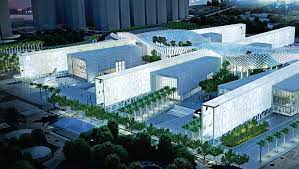

-Kuwait Towers: It's located in the heart of Kuwait City and overlooks the ocean. It's one of the most famous Kuwaiti landmarks and has a good selection of resturants inside.

-Avenues mall: The Avenues mall is home to many well known shops ranging from local all the way to world known boutiques. It's almost 1,200,000 SQM and is one of the largest malls in the Gulf region.

-Sheikh Abdullah Al Salem Cultural centre: The cultural centre was opened in 2018 and includes the Natural History Museum, Science and Technology Museum, Arabic Islamic Science Museum and Space Museum. It's perfect for the whole family and has many interesting games, sites and artificats.
-Al Shaheed Park: The beautiful park is located in the heart of the city, if your looking for a peaceful green and beautiful area then this is the place for you. It has many nice resturants and cafes and is also a good place for atheletes to run or jog. It also has spots for photography like the bridge in the center, it's a great place to grab sunset shots.
 Visit Home Page
Visit Page 3
Visit Home Page
Visit Page 3